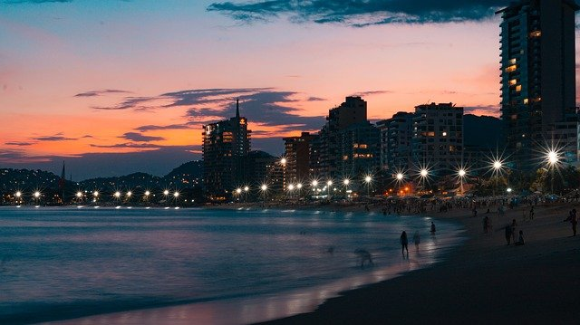

Mexico
I have only once left the states and that was when my cousin, sister, and I decided to go and visit Mexico a few years back.
During this 2 week stay in Mexico, one of the places we visited was Guadalajara. This is where we stayed the majority of the time since that is where both sides of the family, mom's and dad's, lives.
In Guadalajara we stayed with my dad's parents for a while and got to know the land in which my dad grew up. We went to the local mall where he got his first job, the middle of the city which is also called the square, and we also got to meet new family members that I did not know existed.
We also got to meet family members from my mom's side of the family. There we visited their candy shop and even went to a type of fun house which was popular with kids at the time. We stayed there for about 5 days, but 9 in total with the other family members we stayed with.
After those 9 days we stayed with my other grandparents who lived in the country side. It was less comfortable living wise than the house in the city, but it was decent enough for me to stay in. It was still a lot of fun and I would recommend people to go visit Mexico and have a blast exploring it.